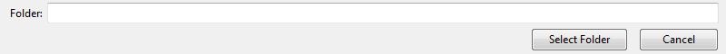
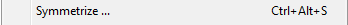

import os files = os.listdir('D:\\Sandeep\\Intel') for f in files: f = str(f) App('Uci6').focus() type("f",KeyModifier.CTRL) wait(1) click(Pattern().targetOffset(-103,-15)) wait(1) type("a",KeyModifier.CTRL) type("D:\\Sandeep\\Intel\\" + str(f) + Key.ENTER) click(Pattern().targetOffset(-8,-3)) click() click() click(Pattern().similar(0.68).targetOffset(0,-3)) type("a",KeyModifier.CTRL) type("D:\\Sandeep\\Intel\\" + str(f) + "\\FILE.##h"+ Key.ENTER) notepad=App("notepad") while True: if notepad.isRunning(): notepad.focus() notepad.close() break;